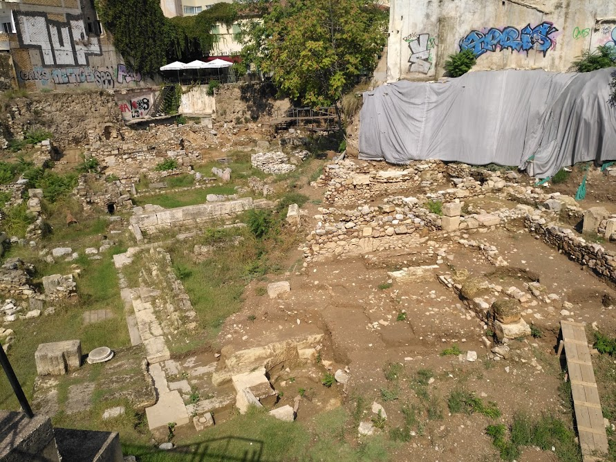
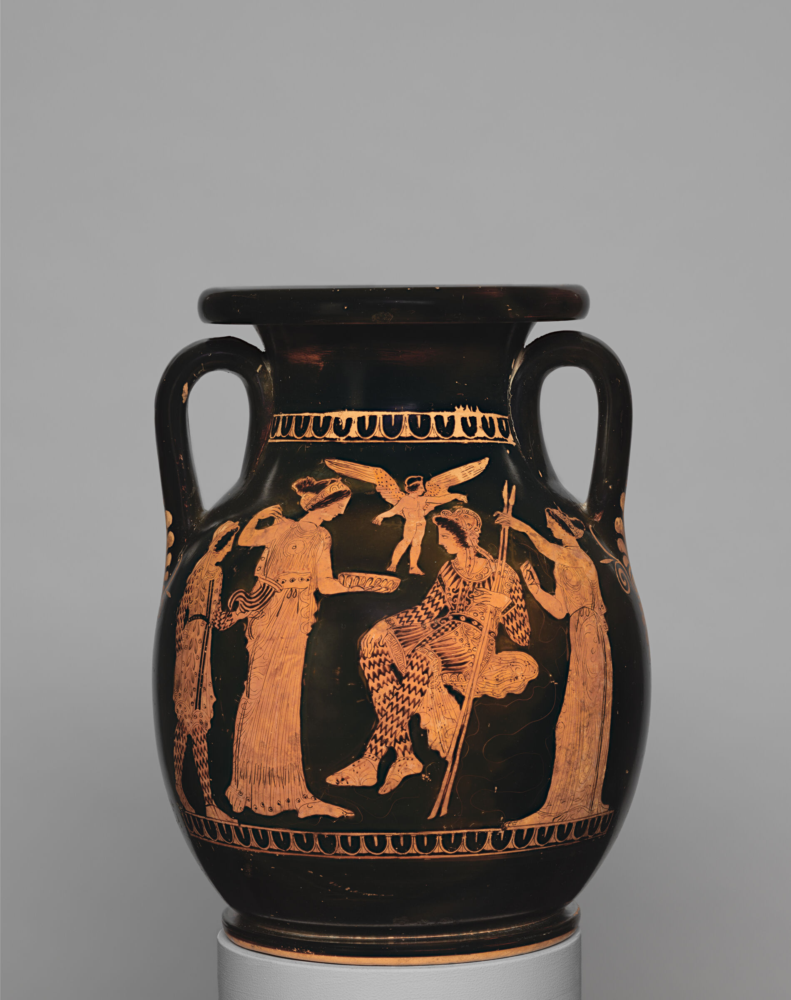
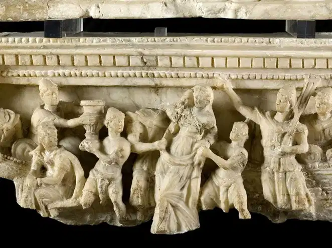
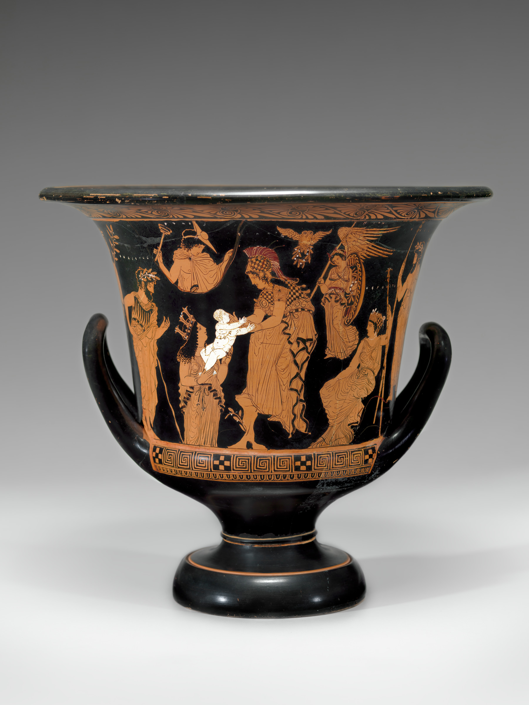
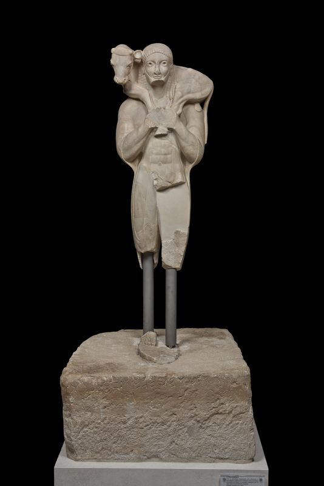
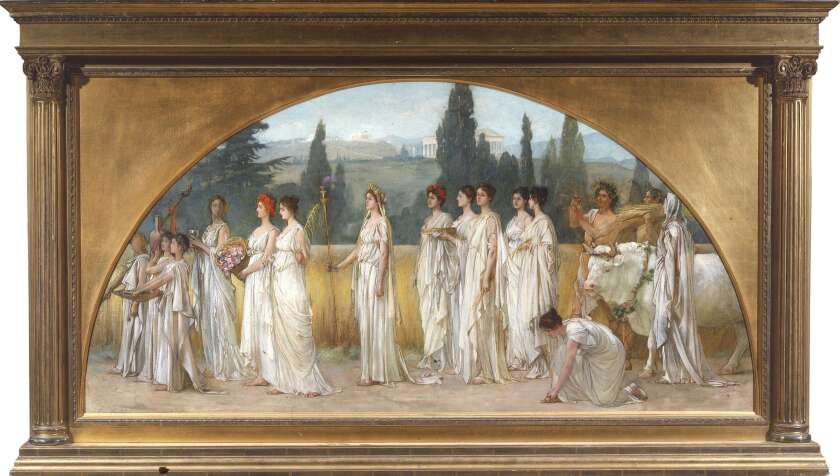
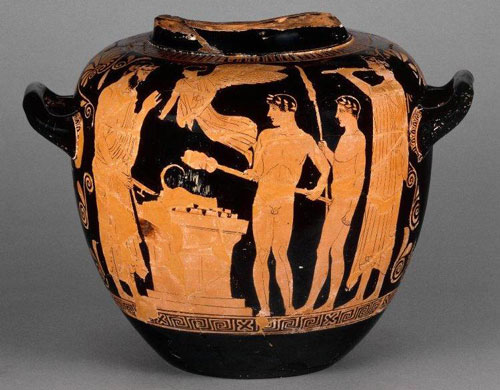
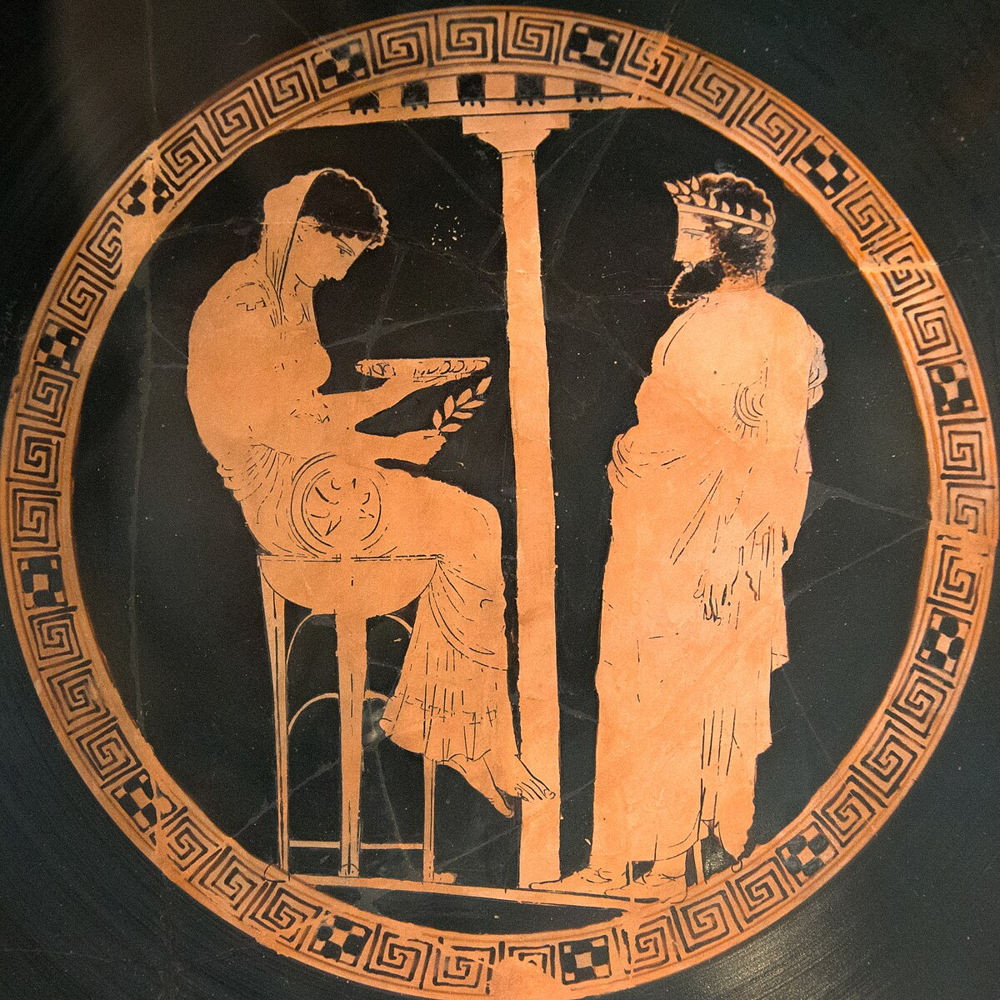

Summaries
Directory
Summary 1
Waterfield, "Environmental Background" and "Historical Background,” pg. 9-10
Summary 2
Price, “Gods, Myths and Festivals,” pg. 12
 Summary 3
Gould, “On Making Sense of Greek Religion,” pg. 8
Summary 4
Hayes, “Understanding Biblical Monotheism,” pg. 18
Summary 5
Bremmer, "Greek Normative Animal Sacrifice,” pg. 114
Summary 6
Morgan, "Women, Religion, and the Home,” pg. 309
Summary 7
Cartledge, "The Greek Religious Festivals,” pg. 107-108
Summary 8
Scott, "Oracle,” pg. 25
Summary 1
Reading Report:
“A big animal sacrifice sponsored by the state was therefore a
festive occasion for the whole citizen community, with a procession
before the sacrifice and a banquet afterwards for as many as could
be fed. In prosperous Classical Athens, a man could expect to take part
in a sacrifice about once a week. Private individuals might perform a
sacrifice in celebration of some event or a successful hunt and invite
their friends to a meal at which the meat was eaten, or a rich man might
feast the members of his village as a benefaction. The gods usually
received, as smoke and smell, the bones and other inedible bits, but the
rest was consumed by humans, with a special cut set aside for the
presiding priest.”
This passage’s description of how community and religion are intertwined
in Greek culture could help answer part of the question of what constitutes
Greek religion. We can gather that their religion’s practice of honoring
and respecting their gods was present in their daily lives, signaling
its direct and heavy influence. Being able to expect and then participate
in weekly sacrifices with their entire city must have been important in each
individual’s life. It also may have strengthened their sense of community,
as they had this common religion and practices.
This passage also touches on Greek religion’s relationship with politics
and economic statuses. It specifies that the big animal sacrifices that
men in Classical Athens could participate in each week were sponsored
by the state, an indicator that Greek religion was also intertwined with
their politics. It also provides insight into how wealthy citizens could
host their own sacrifices for the gods as they had the means, and even to
potentially feed other community members.
The last sentence of this passage describing how the sacrifice is split
between the gods, citizens, and the presiding priest emphasizes the respect
Greeks have for religious figures and the hierarchy dictated by their
religious practices. The gods, with the most power, are at the top,
followed by the priest, and then the citizens. Their adherence to this
hierarchy is a demonstration of their respect for the traditions.
Bridge:
This marble relief shows an animal sacrifice with four youth,
likely boys, leading the cow during a procession of the Panathenaic
festival. This image reinforces the idea from the passage that sacrifices
were significant in ancient Greece for most, if not all citizens. The
setting of the large festival and inclusion of members of the Athenian
community highlights how this tradition was public and deeply ingrained
within their society.
The passage mentions how frequent such festivities and sacrifices
were in Classical Athens. This marble block reflects how these sacrifices
brought people together to partake in religious traditions together, as
well as the state-sponsored aspect of such festivals. The state-sponsored
aspect of the Panathenaic festival is important to note as it explains how
interconnected the political, religious, and societal spheres were.
Together, the passage and the visual evidence show us that animal
sacrifice was much more than just a ritual - it was a way for citizens
to actively participate in both their civic and religious duties, strengthening
both their religious beliefs and their connections with each other. People were
surrounded by collective religious worship, making Greek religion both essential
to and reliant on ancient Greek culture and society.
Summary 2
Reading report:
“Stories about this family were told or represented in many different contexts.
Children heard the myths at the knees of their mothers or nurses. Aristocratic
men in archaic and classical Greece attending their symposia (formalised
drinking parties) liked to tell myths. As we shall see later, myths were
omnipresent in sanctuaries and festivals, both iconographically and verbally.
They were also very visible in other public places: in the Athenian agora, for
example, one sota (portico) gained its name ‘Painted’ because it served to display
four fifth-century BC paintings by the outstanding artists of the day on mythical
and historical topics (cf. below, p.22). The thousands of extant vases of the
seventh to fourth centuries BC depict scenes of the gods and heroes. Some of them
are influenced by now lost works in other media (paintings, tapestries, metalwork),
others are fresh creations of the individual pot painter. The context of these pots
is important. They are the product of artists, including non-Greek slaves, working
in different states and should ideally not all be lumped together as ‘Greek’. Many
of the pots, though preserved for us because they were exported to Etruria in Italy
where they were buried in chamber tombs, were designed in the first instance for
the aristocratic Greek sumposion. Myth-telling and the pottery for the wine-drinking
were complementary.”
This passage describes various parts of Greek religion relating to the spread of the
myths of the Greek gods and its presence in Greek art and culture. Both of these
aspects of Greek religion are crucial to determining the constitution of Greek Religion
in Ancient Greece. The first part of the passage focuses on how the Greek myths were
spread throughout their history, and the second, large part details how the myths were
present in various art forms and played roles in community events.
The author’s description of how myths were told verbally through families and parties,
and visually through public areas and events helps us understand how the myths of the
Greek Panhellenic were likely known by most Greeks, regardless of economic status. This
highlights the connection their religion provided, as citizens of all economic statuses
heard (variations of) the same myths. They weren’t just limited to those with the most
wealth and power, as even the poorer working class heard and told those stories.
Similarly, the depiction of mythical topics on art, specifically pots, help us understand
the impact religion had on creative and working lives. The fact that pots with those
mythical depictions were chosen to be created by artists, some of whom weren’t Greek,
and were sent to and buried in Italy suggests its widespread influence. This is likely an
important part of the Greek Religion as it clearly brought people together past city-state
and geographical boundaries with common stories and experiences.
Bridge:
This image of the Painted Portico, known as Stoa Poikile, provides additional depth
and understanding of the role myths and art played in Greek religion. The passage
touches on how paintings of mythical and historical topics were displayed in the public
portico, but the image highlights just how important this location was. According to Donald
Robertson, “it’s very public and situated among the shops on the edge of the Athenian agora,
precisely where Socrates used to mingle with craftsmen discussing philosophy.” The display of
myths in such a central location where people would gather and discuss intellectual and cultural
topics shows that religion was fully integrated into everyday life in ancient Greece.
This is important to note when understanding what constitutes Greek religion - it was more than
just personal beliefs and rituals. Having this visual evidence of the Stoa helps us better
understand how central religion was in the civic community. Even though it is just ruins now,
it’s still in the center of the city, hopefully an enduring reminder that Greek myths and religion
weren’t just stories that were told and personal beliefs - they shaped beliefs, identities, and values.
Summary 3
Reading report:
“The same absence of finality is characteristic of Greek myth. If there is one reason
beyond all others why we have no tradition of religious myth in our culture, it is
that the Christian ‘myth’ of the Old and New Testament is once for all an unchanging
and unchangeable revelation of divine truth in its entirety; all that is left for
improvisation in the face of new experience is hagiography and martyrology, the
creation of new intermediaries, new saints and new martyrs in the Christian tradition.
By contrast, Greek myth is open-ended; a traditional story can be re-told, told with
new meanings, new incidents, new persons, even with a formal reversal of old meanings,
as in the myth of Helen (seduced to Troy as the casus belli of the Trojan war, the
‘woman of many men’, or in Egypt as a wronged and virtuous wife), or in the myth of
Orestes (example of filial duty to Telemachus in the Odyssey, or paradigm of moral
dilemma, of the inextricability of good and evil in fifth-century tragedy). The
improvisatory character of Greek myth is not just a literary fact, not only the
source of its perennial vitality in literature, but also the guarantee of its
centrality in Greek religion. It is not bound to forms hardened and stiffened by
canonical authority, but mobile, fluent and free to respond to a changing experience
of the world.”
This passage can help answer what constitutes Greek Religion with its comparison of
the religion to Christianity and its description of the “character” of Greek myth.
Highlighting the differences between Christianity and Greek religion is useful as it
utilizes a widespread religion that most people have a basic understanding of to
describe a key characteristic of Greek religion. It emphasizes the fact that there
isn’t room for changes to Christian stories, even as time passes and the world changes.
By describing Greek myth as “open-ended” and having the ability to be re-told, we
understand how Greek myth helped Greek Religion change with the world.
The idea that this passage touches on, that Greek Religion responds to the “changing
experience of the world,” is important as it describes a key characteristic of the
religion. It may be remiss to explain what constitutes Greek Religion without discussing
its changing nature, as it explains why there are various versions of Greek myths
and potentially religious practices. As the author touches on with the examples of
Helen and Orestes’s stories, the myths could change depending on the message that the
people wanted to tell. If people practicing other religions, such as Christianity,
desired to change their stories as such, it would be very discouraged due to the
religion’s pre-existing canons.
Bridge:
These two art pieces depict two different versions of Helen’s story, as described in the passage as “seduced to Troy as the casus belli of the Trojan war, the ‘woman of many men’, or in Egypt as a wronged and virtuous wife.” The first piece is a pelike, whose front shows a couple, likely Paris and Helen. Here, Helen seems very willing to be there, as she is standing in front of him, holding part of her dress. This aligns with the passage’s description of her as the “woman of many men,” as she was married to Menelaus but chose to run away with Paris. However, the second piece is an Etruscan funerary urn depicting the abduction of Helen, representing her as just another possession forcefully being taken to Paris. This aligns with the other version of the myth, where Helen is the “wronged and virtuous wife.” This visual representation of the two different pieces demonstrates the stark differences in versions of the same myth. The version that someone in ancient Greece would know depended on many factors of their environment - their beliefs, location, time, etc. This evolving nature in both oral stories and artwork is integral to ancient Greek religion as it reflects how the religion relied on those participating, and thus the values and traditions adapted to different communities.
Summary 4
Reading report:
“Kaufmann asserts that mythology is basic to pagan religions. Mythology tells of the
lives and exploits of the gods. In pagan mythologies, the gods are born and live lives
very similar to human lives but on a grand scale. They also die and may be reborn, too.
Pagan religions contain theogonies (= accounts of the birth of a god) as well as
cosmogonies (= accounts of the birth of the world). In these theogonies and cosmogonies,
everything emerges from the impersonal primordial realm because this realm contains the
seeds of all being. The creative process usually begins with the emergence of the gods -
as sexually differentiated divine beings. Subsequently the natural world and its inhabitants
(humans and animals) are generated from the primordial realm in some way. In short, the
metadivine realm is the primordial womb for everything mundane and divine - the gods,
humans, and the natural world. / What that means, Kaufmann asserts, is that in pagan
religion there is a fluid boundary between the divine, the human, and the natural worlds.”
This passage provides a greater understanding of Greek Religion with its description of
pagan religions and the importance of mythologies within. Greek religion is considered
polytheistic and possibly pagan because of its belief in more than one god and its
belief that gods’ divine powers impacted nature. In accordance with Kaufmann’s model
described by this passage, Greek religion contained theogonies depicting how gods came
to be, how our world was created, and how humans emerged. The description of the fluid
boundary fits too, as gods often had impacts on the natural world and would take on
forms in the natural world to blend in or communicate with humans.
This passage highlights the importance of mythology in pagan religions, which we can
use to support the importance of Greek mythology in Greek religion. While the two are
separate, mythology is an integral part of the religion. The myths describe how the
gods, humans, and world are intertwined, providing people with a better understanding
of the gods and their histories. They also provided somewhat of a connection to the
gods of Greek religion, as they sometimes centered on human-god interactions or
impacts on their own world that may have been caused by a god. For example, Hesiod’s
Theogony describes how our world was created, which provides people with concrete
information and relatability about how the gods’ actions impact their lives.
Bridge:
This calyx krater depicts Gaia as “a buxom, matronly woman rising from the earth, inseparable from her native element” (theoi.com). The inseparability is an important distinction with this piece of art as it connects to the passage’s description of Kaufmann’s assertion that pagan religion has a “fluid boundary between the divine, the human, and the natural worlds.” Her rising from the earth aligns with the theogonies and cosmogonies of pagan religions like Hesiod’s Theogony, where the divine, humans, and natural world emerge from the same realm. Although she is portrayed as a human woman, Gaia is a personification and description of the earth. This is also a visual support of the importance of mythology in pagan religions as it is representative of the interconnectedness of human, natural, and divine factors. It’s a reminder of how Gaia was one of the first divine beings and also the “great mother of all creation” (theoi.com), dictating the ancient Greeks’ understanding of how the world around them, and themselves, came to be. Additionally, although there aren’t exact descriptions, it appears that Gaia is handing a human child to another divine being. This further emphasizes the idea of a unified origin and flow between the earth, gods, humans, a core part of pagan mythology and ancient Greek religion.
Summary 5
Reading report:
“If for the Greeks themselves the primary aim of sacrifice was communication with the gods,
their ‘primitive’ way of doing so remains curiously hard to accept for modern interpreters.
For Meuli sacrifice was nothing but ritual slaughter, for Burkert the shared aggression of
the sacrificial killing primarily led to the founding of a community, and for Vernant
sacrifice was, fundamentally, killing for eating. Rather striking in these modern
explanations is the ‘secular,’ reductionist approach, which does not take into account
the explicit aims of the Greeks and tries to reduce sacrifice to one clear formula. It
is absolutely true that sacrifice is ritual slaughter, does constitute a community, and
is killing for eating, but, as I hope to have shown, it is similarly true that sacrifice
is much more than that. It is also an occasion for the display of physical strength, for
displaying one’s status, for having a nice dinner, for demonstrating the boundaries of
the group, and, above all, for approaching the gods. A ritual act that stands at the very
center of the community cannot but have economic, political, social, and cultural meanings,
in addition to its religious significance. It will be the challenge for future analyses of
Greek sacrifice to show the richness of all these meanings and not to fall into the temptation
to reduce them to one formula, however attractive.”
The author mentions throughout the reading how sacrifice is a living ritual that changes
as Greek culture changes and re-emphasizes that idea in this paragraph. Sacrifice was clearly
a significant part of Greek religion with impacts on other areas of Greek culture. For example,
the community aspect of the ritual slaughters is important when considering how Greek Religion
connected people that may have been in different social, economic, political, and regional spheres.
If the religion lacked these rituals, Greek Religion may not have had the same widespread impact as
it did.
The author’s observation of how sacrifice isn’t just for the community and distribution of food
but also an opportunity for people to demonstrate their own qualities and grow closer to the gods
is an interesting aspect to add to answering the question. It is an action that people believed
would allow them to approach the gods and leave a positive impression, potentially a basic action
that we are trying to explain with more complexity than needed. The first sentence of this passage
hints at that - the reason Greeks participated in sacrifices may have been to communicate with the
gods, not necessarily just “killing for eating” or “nothing but ritual slaughter.” Perhaps we are
trying to explain these sacrifices as a way for Greeks to come together when they really just all
participated in the sacrifices so they could communicate to their gods.
Bridge:
This statue represents the aspect of personal devotion in Greek religion, a contrast to Meuli, Burkert, and Vernant’s secular approaches to understanding the aim of sacrifice. While we cannot ascertain ancient Greek individuals’ personal motivations for participating in ritual animal sacrifice, we can agree with Bremmer that the motivations are multifaceted, with both religious \and secular significance. However, while Bremmer highlights the communal aspects (“economic, political, social, and cultural meanings”) of sacrifice, this statue portrays the individual actions one would take. The description of the statue is a “man carrying on his shoulders a calf, his offering to the goddess Athena,” with a reserved smile. This demeanor implies the intimate interaction between Greeks and the gods, hopefully an addition to the idea that the description of Greek religion should include multiple dimensions. However, it is still important to reinforce Bremmer’s note that analyzing Greek sacrifice should include “the richness” of the different individual and communal impacts. This statue is just a snippet of ancient Greek history and the tradition of ritual sacrifice, and it’s believed that it was dedicated by and depicts Rhombos, a wealthy Athenian. This is significant as it may also be a representation of upper class individuals, leaving more information about the general population unknown.
Summary 6
Reading report:
“The position of citizen women in Athenian society is a paradox. Their reproductive capacity places
them at the center of the polis and the center of the household: neither can survive without them.
Yet they are also marginalized in a social and political sense: defined by their relationships with
men, inferior in status to them, and, ideally, secluded within the house (Zeitlin 1982). The religious
occasions where women appear most vividly in our sources are at rites of transition, all-female festivals,
and in cults that required the creation or breaching of ritual, social, and communal boundaries.
Female action and movement on these occasions shows that the home is a vital component in articulating
the religious behavior of citizen women in Athens. In public contexts, at festivals and rites of transition,
women’s movement out of the house cyst across the traditional divisions between private and public, between
house and city, and between men and women. Their actions allow the nature of these relationships to be
examined and the boundaries to be constantly redefined. In the private sphere, while much of our evidence
for private female practices is fragmentary, we can see that it shares a common theme in highlighting the
importance of home and family in the life of a citizen wife. Menander’s mother uses religion as a cover to
meet her lost daughter (Menander, Ghost 49-56), Plato’s women set up shrines and altars in response to bad
dreams or evil portents; in doing so they act to protect themselves and their households (Plato, Laws 909e-910a).
While texts may offer us incomplete views of private female behavior, the religious actions of citizen wives
constantly reinforce and reflect their ideological role in Athenian society.”
I chose this specific passage as it is the conclusion of this reading, and thus is a great summary of the
various topics discussed throughout the chapter. The author’s observation of how women played important
roles in various rituals despite often being confined to their households is an interesting addition to the
definition of Greek religion, as previous passages have either generalized to all Greeks or focused on men.
While we don’t have many specifics or the whole story about Athenian women's daily lives in the context of
religion, based on the facts that women were considered inferior to men, they were heavily intertwined with the
“home,” and there were specific rituals in which they appeared at “most vividly,” we can understand how religion
played an important role in their integration with society. We can see from this passage that their inferiority
to men in society didn't mean that they had no impact on Greek religion - in fact, they had a significant impact
on important rituals, such as rites of transition and creating/dissolving boundaries between individual households
and society.
I also find it useful to note how impactful Greek religion was on Athenian women’s lives. The rituals and
festivals they participated in provided them a place to leave their hearth and join society in celebration
of their gods. They had the power to create or breach boundaries during those practices, one which men did
not have and could not obtain due to the structure of their society. This also serves as another reminder of
how intertwined Greek religion, politics, and society were.
Bridge:
This artwork is a sketch of a finished mural that depicts a procession of women participating in the Greek festival of Demeter, Thesmophoria. This festival was reserved for citizen-wives in the Hellenic world, and males were forbidden from participating and knowing the Thesmophorian rituals. This directly supports Morgan’s assertion that women played an important role in Greek religion, and religious practices provided them an extension to their typical societal role. The Thesmophorian rituals were intended to bring protection to Athenians’ land, dictating their agricultural bounty and thus most of their livelihoods. Although they weren't considered citizens and were marginalized in Greek society, this religious power brought significance to their actions outside the home. As hellenic.org states, this festival was an “opportunity to engage in public life, something otherwise unavailable to them.” As much as these rituals they performed were providing for their community, these religions were incorporating them into the communal and social aspects of Greek religion. This passage and artwork again stress the necessity of viewing Greek religion as a multifaceted blend between individuals and their communities. Although our historical evidence is limited and biased towards the actions and beliefs of wealthier men, other groups also played important roles and were impacted by religious practices and we cannot overlook them.
Summary 7
Reading report:
“On the other hand, the athletics never broke entirely free from their cultic moorings. To approach the
ancient Olympics in a spirit appropriate to their modern imitation is to let oneself in for a grave
shock. It would be ‘as if a sports correspondent, setting out to cover the Montreal Olympics, should
find that he had been sent, instead, to cover the Holy Week ceremonies at Seville’. Scholars cannot
agree on the order of the athletics programme, but there is unanimity that the festival began, ended
and was punctuated with individual and collective religious worship and that it was timed to coincide
with a full moon, probably the second after the summer solstice. The first day was reserved for
ceremonial within the Altis. Sacrifices, dedications and prayers were offered up to Zeus by officials
and competitors, and the solemnly binding oath was sworn by all participants before the altar and
statue of Zeus Horkios (Guardian of Oaths). Breach of this oath could lead to disqualification and a
heavy fine. During the Games there were two more public sacrifices; the one held on the day of the full
moon following the procession to the great ash altar of Zeus was the festival’s central event. The final
day was concluded with a general feast after the crowning of the victors. / But if it would be wrong to
ignore the fundamental religious components of the ancient Olympics, it would be hardly less erroneous
to ignore the more purely secular elements too. Of these, three may be picked out for special mention:
the economics of the festival and its accompaniments; the character of the athletic competition; and the
relationship between politics and sport.”
I chose this passage due to its focus on Greek sports and competitions in relation to Greek religion,
highlighting its wide reach. The idea that their competitions, specifically the Olympics, would start
and end with religious worship is more of a foreign idea to us, as we often separate religion, politics,
and entertainment. The dedication of several days to ceremonies and public sacrifices for Zeus demonstrates
that religion was a core part of the occasion.
This passage also touches on how the natural world affects Greek religion. The alignment of the athletic
festival with natural occasions like the full moon and the summer solstice highlights how the Greeks viewed
such events as significant for their connection to the gods.
The connections between Greek religion, politics, and economics mentioned is also compelling because of
how they were naturally intertwined. They all supported the hosting of these competitions, each with
different effects and results. For example, religion would be the basis of the timing and some of the
events during the occasion, and people gathered could participate in the worshipping of Zeus. On the other
hand, the festivities would generate economic activity due to the large numbers of people that came to the
city to spectate or participate. Additionally, political figures could use these sporting events to try and
gain favor with the public.
Bridge:
This Athenian stamnos shows victorious athletes performing a sacrifice to Zeus in the presence of the goddess Nike. This supports Carteledge’s discussion about how religion dictated various important Greek athletics traditions and is supporting visual evidence for Cartledge’s example of the multiple sacrifices to Zeus that would take place before and during the Olympics. We can assume that the sacrifice depicted in the art is at the end of the Olympics since it shows victors, and the meat would be distributed in the public feast. The presence of Nike in this sacrificial act highlights the belief Greeks held that the gods were omnipresent and their sacrifices to them were sacred and necessary, as they attributed their victories to some divine intervention. However, an aspect of the Olympics and other athletic competitions that this piece doesn't represent is its communal nature. Nike likely wouldn’t be the only spectator in this scene as there may have been a large audience looking upon the ritual. This would emphasize the communal nature of sacrifice in festivals, which could begin to tie into their secular motivations. As there are larger groups of people gathering, there are more opportunities to gain economic, social, and political power that would be important to note when discussing Greek religion’s integral part in Greek society.
Summary 8
Reading report:
“Key here is that the Greek world was filled with a ‘constant hum’ of divine communication.
It was a system used by all levels of Greek society, and as well, it was a system in which
everyone had their ‘preferred’ form of communication, which could alter depending on the type
and importance of the question to be asked. [...] The importance of divination does not mean,
however, that the oracular system was never mocked in Greek culture. The consultation of oracles
was lampooned in Greek comedy: in Aristophanes’ Knights and Birds, for example, oracle sellers
are figures of fun. The strength of their connection with the divine too could be questioned.
Euripides, in a fragment of an otherwise lost play (Frag. 973N), wrote ‘the best seer is the one
who guessed right.’ Sometimes too their usefulness could be questioned. Xenophon, in the fourth
century BC, argued that divination became useful only when human capacity ended. We shall see
in the coming chapters instances wherein even the oracle of Apollo at Delphi was said to have
been bribed and to have become biased, or was treated with circumspection by even its most loyal
consultants. But all these instances represent an aberration from the norm, an aberration that
did not in the long term shake belief in the system as a whole, a system that continued to speak
of divination as a useful and real connection to the gods.”
Divination, as discussed in previous lectures, was an integral part of Greek religion as it provided a
viable connection between Greeks and the gods. Oracles were an important aspect of divination as Greeks
could go to them with questions or for advice in a manner more direct to the gods. However, I chose this
passage because of its focus on how oracles were widely accepted and utilized in ancient Greece, but
also still criticized and questioned. The fact that people didn’t just accept the concept of gods speaking
through oracles touches on the reality of the religion - they participated in such traditions because
of their belief in the gods, but like modern society, questioned origins in hopes of better understanding
the religion.
This goes against the idea that Greeks simply participated in traditions because they had always been
done, such as sacrifices possibly not having any meaning besides being closer to the gods. Through
viewing visiting the oracles as a way to guide Greeks to make decisions individually or as a community
rather than just a way to ask the gods a question or to predict their future, we can better understand
the nuances, positive and negative, through which Greeks viewed their own religion and its traditions.
However, in the end, the Delphi Oracle’s ability to survive for over a millennium is a tribute to the
inspiration and connection to the gods it provided the Greeks.
{kind=link}
Bridge:
I attempted to find visual representations of the oracle sellers from Aristophanes’ Knights and Birds, as well as ones depicting a mistrust or mocking of oracles, but was unsuccessful. However, this is support for Scott’s statement that instances of biased oracles or Greeks’ mockery of divination were an “aberration from the norm,” and divination was a stable aspect of Greek religion and form of connection to the gods. While this artwork doesn’t tell the entire story of oracles in Greek religion and history as well as historical texts do, it provides us with a basic understanding of what the process of seeking divine counsel looked like, including who, how, and where. It is an Attic red-figure kylix from Vulci that depicts King Aiegus seeking consultation from the Pythia in Delphi. This represents the desire for individuals to participate in divination methods to seek advice from the gods, even those with significant power and wealth. This display of piety and reliance on the gods contributes to an explanation of the solid foundation of divination in Greek religion. The belief the Greeks held that the gods were more powerful than any human led to their participation in divination to communicate with their gods, in turn contributing to the long lasting history of divination in Greek religion, forming a cycle of belief and communication.